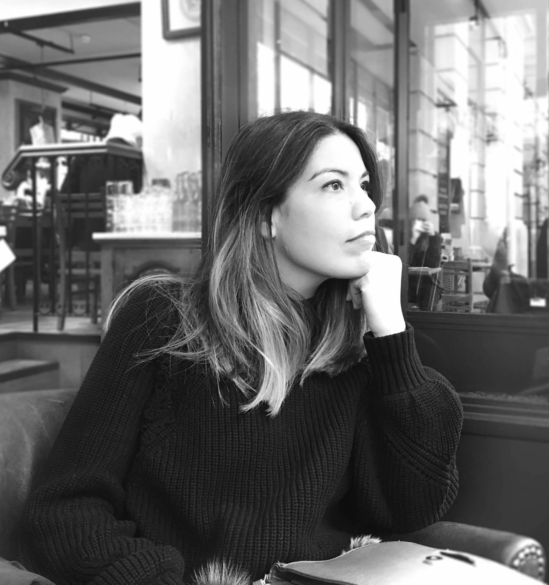

00 - This is me thinking about paella
Hello, I'm Irene 👋
I’m a UX/UI & Product Designer based in Murcia, Spain.
I have always enjoyed solving problems through design, which led me to study Architecture in the first place.
My 5 years of professional experience have taught me to seek a deep understanding of people’s needs, to approach a project with the user at the center and to always be hungry for new knowledge.
I transitioned into UX because I truly believe that technology is key to help solve real-world challenges as well as make life easier and more pleasant for people, and I wanted to get involved in the process.
About me. I love trying new food, my favourites are Ramen and Paella. In my free time I enjoy travelling with my people, taking photos and spending long hours reading books in cozy places.
Education
-
Bootcamp UX/UI Design
Ironhack
March 2021 - May 2021
-
UX/UI Design (self-learning)
Interaction Design Foundation
November 2019 - Present
-
Master in Architecture
Polytechnic University of Madrid (UPM)
Graduated in 2015
Skills
- Design Thinking
- Research
- Wireframing
- Prototyping
- User Interface Design
- Testing
- HTML5
- CSS3